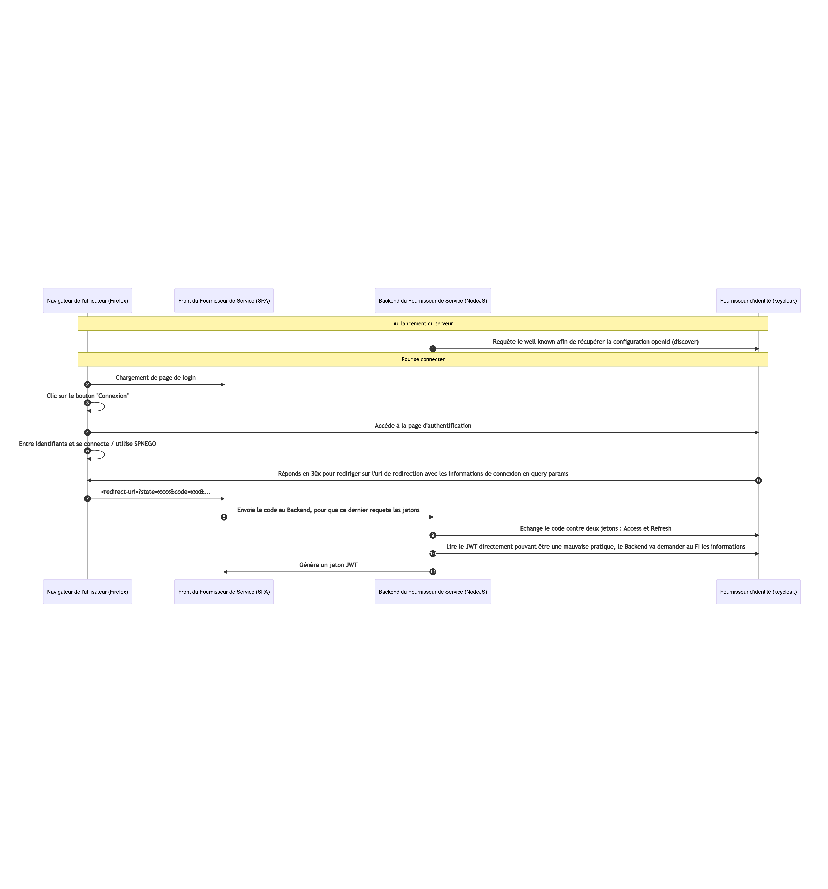

Intégration mindef connect
Attention : La documentation ici présente est le fruit de rétro-ingénierie, en l'absence de documentation officielle en accès libre.
Implémentation
L'implémentation sur stargate du protocole openid est partielle, on se contente de récupérer un jeton, d'introspecter deans pour récupérer l'email, afin de générer un jeton JWT stargate

Configuration Keycloak
Pour pouvoir utiliser keycloak pour tester l'implémentation, il faut :
- Créer un realm
- Créer un client
- Passer ce client en type "confidentiel"
- Définir des Redirect URI autorisées
- Créer un utilisateur
- Définir un mot de passe sur cet utilisateur
- Configurer les variables du backend avec :
- L'URL du realm
- L'ID du client
- Le secret du client
Plus de détails sur la méthode de configuration dans la documentation Igloo.